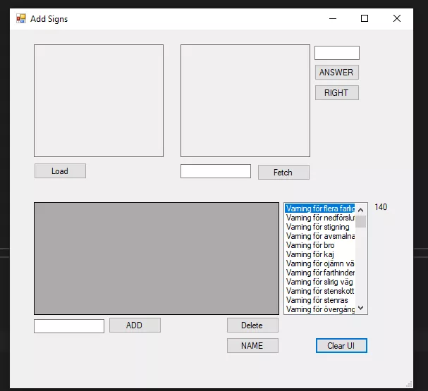

Other Projects
FoodRoulette
Guess road sign
My C# Windows Forms Application (built before AI tools) manages road signs using a locally hosted SQL Server. It allows users to add, fetch, update, and delete road sign images stored in a local database. Users can upload images, store them as byte[], and display them in a PictureBox. The app also includes a quiz feature, where users guess road sign names from images, with score tracking over 10 rounds. SQL queries handle CRUD operations, and UI elements like DataGridView and ListBox display stored data.
GitHub  XNetBank
BankNET2024 is a console-based banking system that provides basic banking functionalities for both customers (users) and administrators (admins). The project was developed as a group school project, focusing on object-oriented programming (OOP) principles, security (e.g., masked password input), and financial operations such as transactions, account management, and currency conversion. github
XSchool Database
SchoolDb is a database for managing students, employees, courses, grades, and classes. It includes tables for students, teachers, courses, and grades, with foreign keys ensuring data integrity. Stored procedures and views help retrieve employee and student info efficiently.
X